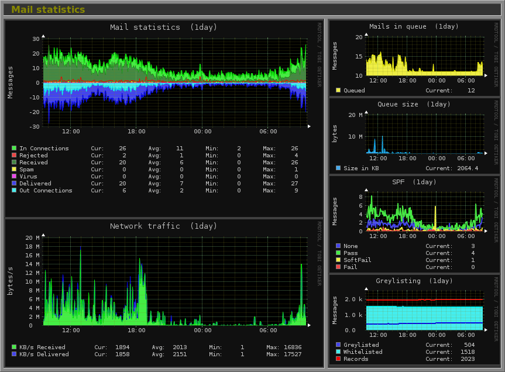

Linux HealthCheck
Monitor CPU, Memory, Disk usage, and system logs efficiently.


- Check CPU with
toporhtop - Monitor disk space with
df -h - Review logs using
journalctl
Monitor CPU, Memory, Disk, Network, and System Load with visual dashboards, alerts, and detailed reports.
Linux HealthCheck is the backbone of reliable DevOps operations. By continuously monitoring CPU, memory, disk, network, and system load, administrators can proactively prevent outages, optimize performance, and maintain service reliability. A well-structured health check also ensures compliance, security, and long-term stability of DevOps platforms.
The report attached below is a sample Linux HealthCheck dashboard report for Linux hosting the EZDevOps DevOps platform. It demonstrates real-world monitoring practices including alerts, automated checks, historical trends, and optimization tips.
Monitor CPU, Memory, Disk usage, and system logs efficiently.

top or htopdf -hjournalctlCPU utilization is critical for server performance. Monitor per-core usage to identify bottlenecks and optimize scheduling.
top or htop to view live CPU usage.mpstat -P ALL 5 to see per-core utilization every 5 seconds.ps aux --sort=-%cpufree -h, vmstat 5top or smem over timedf -h, du -sh /pathiostat -x 5, iotopifconfig or ip addrnetstat -tulnp, ss -tulnpping, mtriftop, nloadps aux --sort=-%cpu, ps aux --sort=-%memsystemctl status nginx, systemctl is-active sshd/var/log/syslog, /var/log/messages/var/log/auth.logjournalctl for centralized log reviewsudo ufw status or iptables -Lapt list --upgradable or yum check-update*/5 * * * * /usr/local/bin/linux_healthcheck.shnice and reniceBelow is a sample Linux HealthCheck dashboard report for Linux servers hosting the EZDevOps DevOps platform. It demonstrates real-time monitoring of CPU, memory, disk, network, services, and automated alerts for proactive management.
Sample Linux HealthCheck Dashboard report for Linux hosting the EZDevOps DevOps platform.